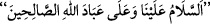

bereket talep olunur. Vakit, kuşluk namazı kılmak için abdest alma vakti olunca -Allahu
a‘lem- Peygamberimiz bunu da selâm konusu içinde değerlendirdi ve fazîletli olanın
nafile namazları evlerde ve benzeri yerlerde gizli kılmak olduğuna işâret ederek onu ev
içindeki selâmın ardından zikretti.
Eve giren kişi, eğer evde kimse yoksa
yâni “Selâm bize ve
Allah’ın sâlih kullarının üzerine olsun.” der. Bu selâma meleklerin karşılık verdikleri
rivâyet olunmuştur.[188] Mescide girildiğinde de aynı durum geçerlidir. Bir hadiste:
“Evlerinize girdiğiniz zaman orada bulunanlara selâm verin. Biriniz yemek yediği
zaman da Allah’ın ismini zikretsin. Çünkü sizden biri eve girip selâm verdiği zaman
şeytan onunla beraber evine giremez. Yemek yerken Allah’ı zikredince ise şeytan
(arkadaşlarına): ‘Sizin için burada ne geceleyecek bir yer, ne de yiyecek bir akşam
yemeği var’ der. Sizden biri evine girdiği zaman selâm vermez ve yemek yerken de
Allah’ı anmazsa şeytan arkadaşlarına: ‘Hem yiyecek akşam yemeği, hem de
geceleyecek bir yer buldunuz.’ der.”[189]
el-Bostân’da zikredildiğine göre akıllı çocuklara selâm vermek, vermemekten
efdaldir. Aralarında bir tanışma ve gevşeme meydana gelmemesi, bundan da bir fitnenin
zuhûr etmemesi için erkeklerin genç kadınlara selâm vermemeleri gerekir. Bir
müslüman, yahudi ve hıristiyana önce kendi başlamak sûretiyle selâm vermez. Bu
haramdır. Çünkü bunda kâfirleri yüceltmek vardır. Bu ise câiz olmaz. Bid‘at sâhibi
kimselere selâm da bunun gibidir. Kişi bilmediği birine selâm verse, sonra selâm
verdiği bu kimsenin bir zimmî ve bid‘atçı olduğu ortaya çıksa, onu tahkir etmek için
“Selâmımı geri aldım.” demesi gerekir. Eğer ehl-i kitaptan birine selâm verme ihtiyacı
duyarsa “
Selâm, hidâyete tâbi olanlara olsun” (Tâhâ, 20/47) der.
Eğer selâma karşılık verirse, müslüman sadece: “__WORD__ yâni “size de…” der. Selâmla
ilgili olarak Nisâ sûresinin “Bir selâmla selâmlandığınız vakit…” (en-Nisâ, 4/81)
âyetinin tefsirinde doyurucu bilgi geçti. Oraya mürâcaat oluna.
Baklî (k.s.)’un Hakâik’ında der ki: “Allah dostlarının evlerine hürmetle ve doğru bir
itikadla girdiğiniz zaman bilin ki siz Allah’ın kerâmet ve ikramının ehlisiniz.
Dolayısıyla kendinize Allah’ın selâmı ile selâm verin. Çünkü orası, o vakitte Allah’ın
ikramının mahâllidir.”
Fakir (Bursevî) der ki: Her ne kadar avam bilmeseler ve inanmasalar da mübarek
mezarlara ve şehidliklere/mekânlara girerken de durum aynıdır.
Kemal Hucendî der ki:
Sûfîyim, sûfîlere de inanırım
Ben sûfî gibi îtikadı güzel kim var?
Hâfız ise şöyle der: